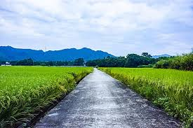

Thanjavur is a beautiful location known for its rich culture, history, and scenic beauty.Thanjavur, located in southern Tamil Nadu, India, is a historic city renowned for its rich cultural heritage and agricultural significance. Positioned on the banks of the Kaveri River, it was once the capital of the Chola dynasty. The city is famous for its stunning Brihadeeswarar Temple, a UNESCO World Heritage Site, and is known as the "Rice Bowl of Tamil Nadu" due to its significant rice cultivation. Thanjavur’s blend of historical grandeur and vibrant local economy makes it a notable destination in India.Explore our website to learn more about the people, places, and unique specials that make Thanjavur so special.
